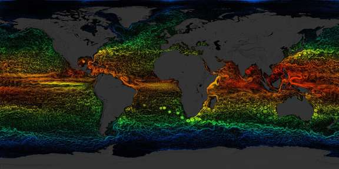
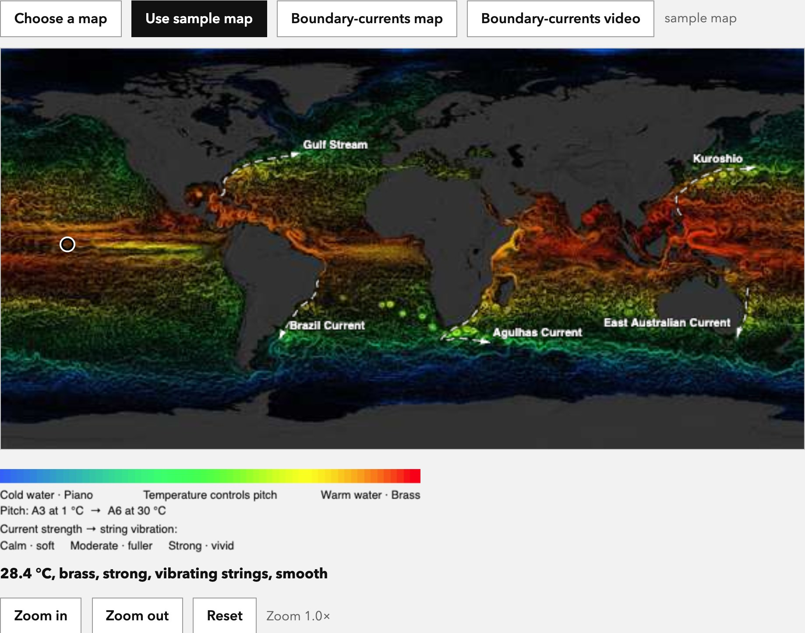

NASA Space Apps Challenge 2026
Earth
Information
Jukebox
The ocean as an orchestra

Why sound
NASA shows Earth science almost entirely through color. That leaves out anyone who can’t read a color bar.
Who is left out
People who are blind, have low vision or are color blind. For them a temperature map is hard or impossible to read.
Our question
Can an orchestra let listeners hear where the ocean is warm or cold, and how its currents flow, without relying on color?
From map to music
| On the map | In your ears |
|---|---|
| Temperature | Pitch: warmer water sounds higher, and notes snap to the chord being played so the music stays in key. Cold water plays piano and warm water plays brass, blending between about 8 and 24 °C. |
| Current strength | Strings: a stronger current makes violin, viola and cello louder and fuller, with deeper, faster vibrato. They stay secondary to temperature. |
| Current steadiness | Steady flow sounds smooth and joined; uneven flow sounds short and detached. |
| Current direction | East or west moves the sound between your ears. North or south steps the melody up or down. |
Only the strings vibrate, so piano and brass stay in tune. Every reading can also be spoken aloud.
The prototype in use

1 · Load
Open a NASA animation
Drop in the video, or use a built-in map.
2 · Point
Touch a place, hear it
The music follows it as the ocean moves.
3 · Scan
Sweep the whole map
One note per strip, in any direction.
4 · Ride
Follow a boundary current
Ride the Gulf Stream or Kuroshio and hear it cool toward the pole.
Exploring without looking
One finger
Point
The music follows the spot you point at.
Two fingers
Zoom in
Hear only the area in view.
Three fingers
Zoom out
Step back to the wider ocean.
Four fingers
Swipe to scan
The swipe sets the direction and starts the sweep.
Five fingers
Where am I?
Point first, then open your hand to hear the place.
Two fists
Stop
Stops a scan or a tour.
One fist
Talk to the map
Turns on voice control.
No camera?
Mouse, touch, keys
Arrow keys, + and −, and buttons do the same.
NASA data and open technology
The data
Two NASA animations
Global Sea Surface Currents and Temperature, and Perpetual Ocean 2: Western Boundary Currents, from NASA’s Scientific Visualization Studio. Temperature is color; currents are motion.
Reading it
Color back to numbers
Each ocean pixel’s color becomes a temperature on NASA’s color bar, and currents come from the moving streaks. A land mask keeps deserts from sounding like warm water.
Running it
All in the browser
Web Audio plays the instruments, MediaPipe tracks the hand and speech recognition handles voice. Camera video stays on your computer.
Data: svs.gsfc.nasa.gov/3912, /5425 and /5479 (ECCO2 ocean model). Sound design follows sonification research (Walker and Nees, 2011). Code and write-up were drafted with AI assistance (Claude); the team chose the idea, audience, sound mappings and controls.
What we test next
Warm or cool?
Can listeners tell which of two regions is warmer by sound alone?
Strong or calm?
Do fuller, more vibrant strings and choppier notes read as a stronger, less steady current?
Which way?
Can flow direction be learned from stereo position and melody steps, on headphones?
Eyes off the screen
Can a user reach a place, zoom in and hear its reading with gestures and voice only?
Today: a working prototype, with listening tests still to come. We make no claims for blind users until blind and low-vision listeners have tried it.
Try it: hayeonwhale.github.io/NasaSpaceX_earth-jukebox